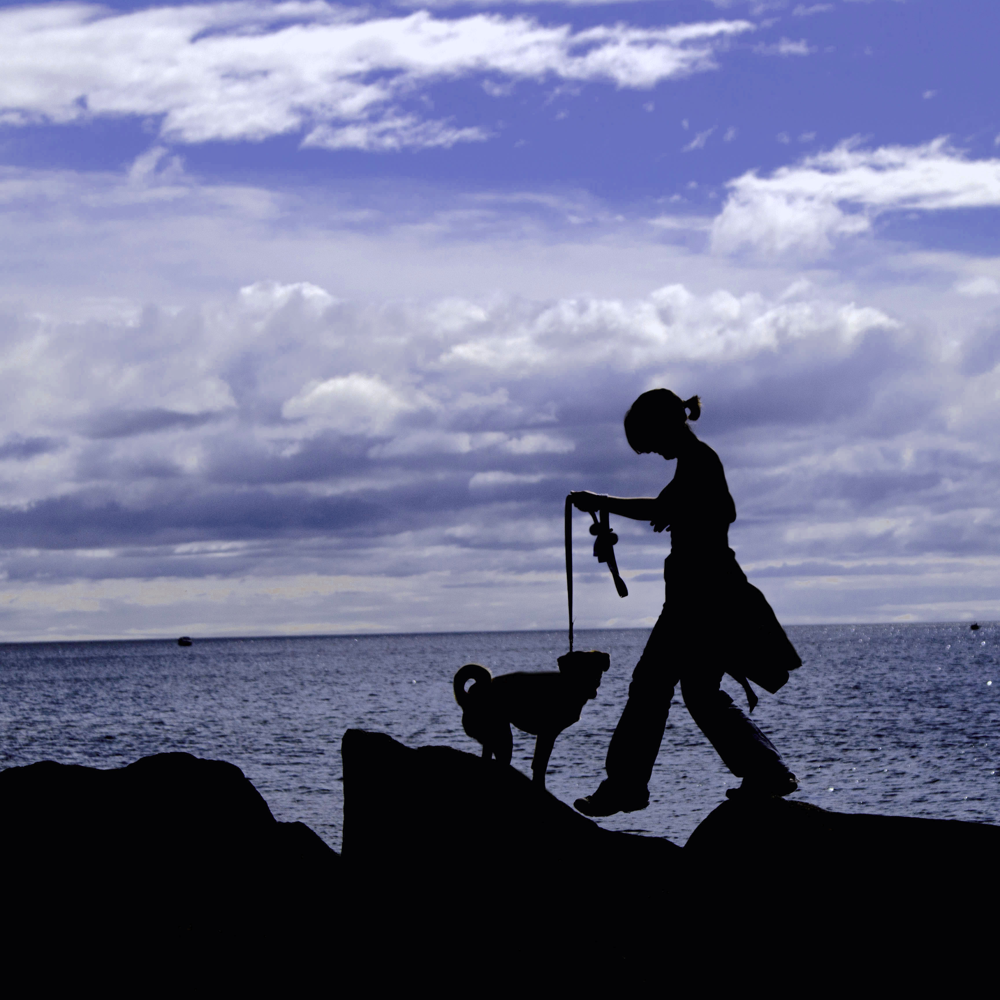

About Me
Aspiring software developer | Dog lover | Bike commuter
Education
I am an aspiring software developer, and a current student at Ada Developers Academy (cohort 3).
In 2015, I received my Master of Science in Kinesiology / Exercise Physiology from the University of Minnesota. In 2013, I received a Bachelor of Science in Kinesiology and a Bachelor of Arts in English from the University of Minnesota.